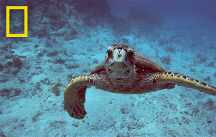
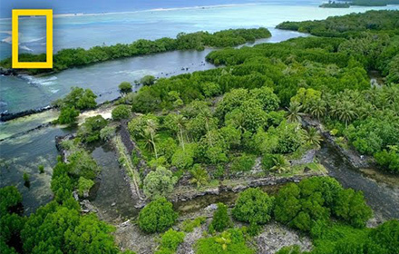

본문콘텐츠영역
WHO WE ARE
National Geographic is the world's premium destination for science, exploration, and adventure. Through their world-class scientists, photographers, journalists, and filmmakers, Nat Geo gets you closer to the stories that matter and past the edge of what's possible.
CHANNEL
-

Oceans 101 | National Geographic
-

Ancient City of Nan Madol | Lost Cities
-

Solar System 101 | National Geographic
-

Gordon Ramsay Hunts for Native Foods of New Zealand | Gordon Ramsay: Uncharted
-

Everest Glaciology - Truth is in the Ice | National Geographic
-

Aretha Franklin Meets Dinah Washington | Genius: Aretha
MAGAZINES
FOLLOW US
Welcome to the National Geographic community, where we bring our stories, images and video to the world in real-time, inviting followers along on our ongoing 133-year journey.
Our yellow border is a portal to the world, showcasing all of the wonder and beauty that it has to offer. Our yellow border is a portal to the world, showcasing all of the wonder and beauty that it has to offer. This page allows our fans to join us while promoting an enriching and supportive climate for our community. Therefore, we do not tolerate words of hate, harassment or disparagement. We reserve the right to remove any posting or other material that we find off-topic, inappropriate or objectionable.

-
"In a place that is home to so many lasts, the last great salmon run, the last intact brown bear habitat, so much rides on the pristine nature of the ecosystem."
-
To see it all would take years. But on a road trip down Chile’s Route 7, you can pack the Patagonian adventure of a lifetime into a two-week journey
-
Follow @jasperdoest to learn more about Randi or other stories about the natural world. #Arcticfox #svalbard #wildlife
-
Today, it is estimated there are fewer than 2,000-3,000 endangered Rothschild's giraffes in Africa, with about 800 in Kenya.